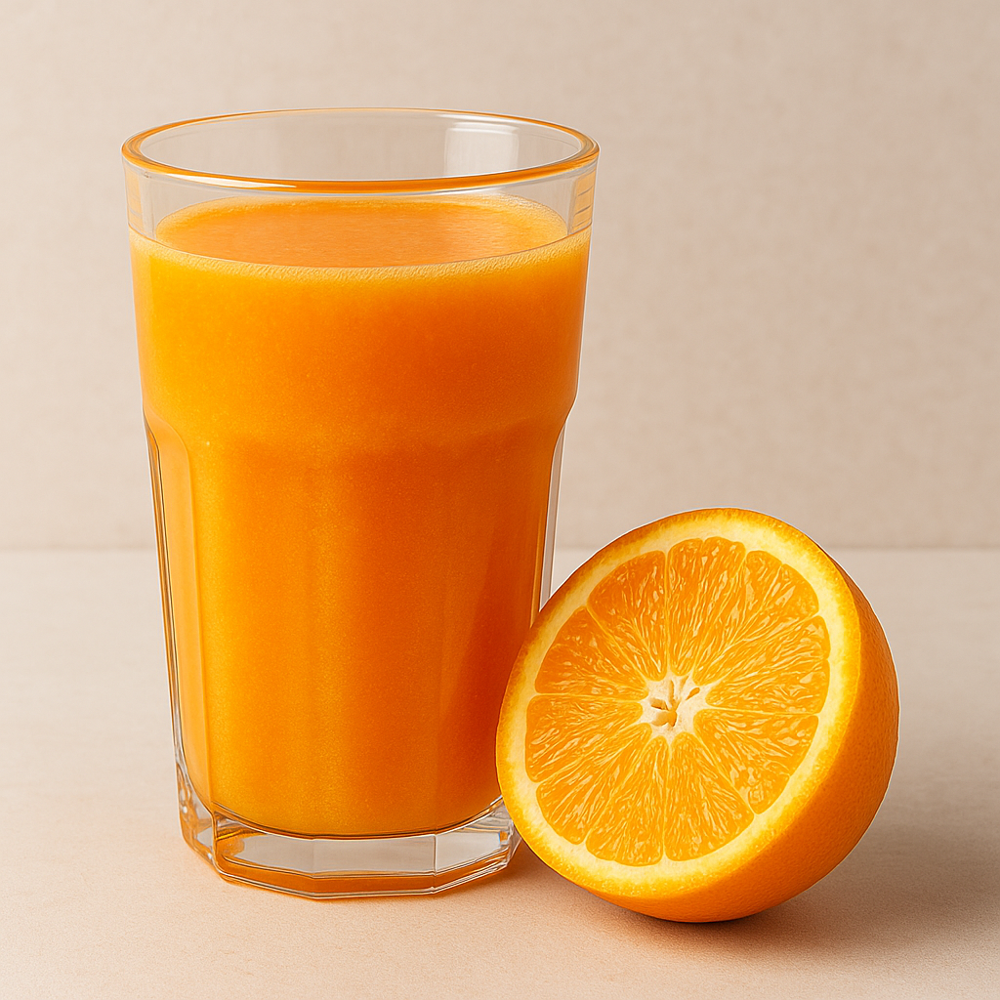

5 ideias de sucos naturais para o seu dia a dia
1. Suco de laranja
O mais tradicional do grupo, o suco de laranja não pode faltar no seu cardápio. Ele é o queridinho de todos e é difícil encontrar alguém que não goste.
Rica em vitamina C, a laranja ajuda a tratar e prevenir gripes e também é antioxidante.
2. Suco de uva
O suco de uva é famoso por ser forte e bem encorpado, tendo muitas vezes que ser diluído em água.
Uma das grandes qualidades desse suco é que ele atua como antidepressivo natural e na prevenção do câncer graças à vitamina B e aos antioxidantes.
3. Suco de maracujá
Queridinho no Brasil, o suco de maracujá possui propriedades calmantes que tornam o suco ideal para ser consumido em temporadas quentes.
A fruta apresenta uma boa quantidade de vitaminas A, B e C e age como antioxidante, prevenindo o envelhecimento das células e dos órgãos..
4. Suco de manga
Com característica tropical, a manga fica ainda mais deliciosa na forma de suco.
Dentre as suas propriedades estão os antioxidantes naturais e as fibras da fruta, que combatem a prisão de ventre e ajudam na prevenção contra o câncer.
4. Suco de goiaba

Com sabor marcante e aroma irresistível, a goiaba conquista ainda mais corações quando transformada em suco.
Rica em vitamina C, fibras e antioxidantes, essa fruta ajuda a fortalecer a imunidade, melhora o funcionamento do intestino e contribui para a saúde da pele.